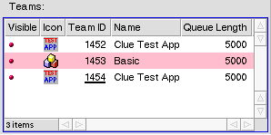
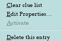
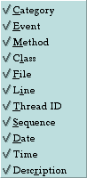

ATTN:
This is a Development release of Clue.
The program and this documentation are unfinished at this time.
If you need a stable version, use 2001.5.16.
However, at this time, only the Clue application is translated, the documentation is not.
Clue separates Fingerprint entries by using the TeamID to add a new entry into the Teams listbox if needed. The Teams list box has 5 categories of information it shows for each entry.
Here is what the Teams listview looks like:

A single line under the "Team ID" indicates that that application is still running, and will automatically be removed when that application quits. In the picture above, the "Team ID" of 1454, shows that that application is still running.
You can right-click on a team entry. A menu like this will show, allowing you different options for the team:

Here is a short description of what each of the twelve Events represent:
Right now, Clue is hard coded to only keep track of 5,000 most recent Fingerprints. On the 5,001st Fingerprint, it will remove the very 1st Fingerprint entry, and so on.
Each Team Tab shown displays the applications icon, and the text "Team: TEAM_ID" where TEAM_ID is the Team ID from the Team list that it represents. The Team Tab view displays the Fingerprints that have first passed the filter. After that, the entries that are displayed are determined by each Teams view filter (this feature is not quite yet implemented in this release). The Fingerprint entries are displayed in a list in sequence by when they arrived, NOT by the information contained within (ie the Sequence number). When you select an entry, if it has "Detail" data, it will be displayed in the text box below the list. The list is a multi-select list. When you click and drag previously selected fingerprints, you can drop them on the desktop or another application.
The Team Tab view list displays eleven different columns:
You can show/hide any of the eleven columns by right-clicking on the column header, and check/uncheck an entry. Below is an image of what that menu looks like:

You can reorder any column by left-clicking on it and dragging it to the new position.
With heavy traffic coming into Clue, sometimes the UI will freeze. This is normal and no data should be lost. I've sent quite a bit of data to the program over the course of 48 hours, to a total of over 4 million messages without a memory leak, so I believe it to be quite robust. The maximum Description and Detail length you can send is somewhat unlimited, but you should keep them as short as possible as this data has to cross the system from your app to Clue. As you can probably imagine, if the program holds up to 5,000 entries, with each "Detail" and/or "Description" maxed out at 1,024 bytes (and that doesn't include the other record information!), you can easily suck up several megabytes of memory rather quickly!!!
To allow sending data from your app to Clue, you must first include the "Clue.h" file in your .cpp file by using this line: #include "Clue.h". You also need to "#define CLUE" before your "#include", otherwise tracing will be removed from the code for that file. Make sure that you've included all other header files before including "Clue.h"!!!
An example of this is shown below:
All of the macros take some arguments that you supply that identify that Fingerprint. It is important to note that each macro is independent of any other. That is, you don't need to have used the TRACE_CLASS macro in order to use the TRACE_METHOD macro, you can use them in any combination! The TRACE_OBJECT, TRACE_SIMPLE, and TRACE_METHOD macros take a parameter list that is enclosed by double opening "((" and double closing "))" brackets, while the TRACE_CLASS macro uses a single open "(" and close ")" bracket.
|
Type |
Description |
|
78 Enums
|
alignment,
alpha_function,
border_style,
B_TRANSLATION_ERROR,
buffer_layout,
buffer_orientation,
button_width,
cap_mode,
color_control_layout,
color_space,
cpu_type,
data_bits,
data_rate,
directory_which,
direct_buffer_state,
direct_driver_state,
drawing_mode,
file_panel_mode,
file_panel_button,
filter_result,
font_direction,
font_file_format,
font_metric_mode,
gs_attributes,
hash_mark_location,
icon_size,
image_type,
info_location,
input_device_notification,
input_device_type,
input_method_op,
interpolation_mode,
join_mode,
list_view_type,
mail_flags,
media_display_flags,
media_file_accept_format_flags,
media_flags,
media_format_family,
media_format_flags,
media_frame_flags,
media_multi_channels,
media_multi_matrix,
media_parameter_flags,
media_producer_status,
media_realtime_flags,
media_seek_type,
media_type,
menu_bar_border,
menu_layout,
message_delivery,
message_source,
midi_axe,
mpeg_id,
node_flavor,
node_kind,
orientation,
parity_mode,
platform_type,
query_op,
reverb_mode,
source_alpha,
stop_bits,
swap_action,
status_t,
synth_mode
tab_position,
thread_state,
thumb_style,
timecode_type,
undo_state,
value_kind,
version_kind,
video_orientation,
window_alignment,
window_feel,
window_look,
window_type.
|
|
135 Class'
|
BAlert,
BAppFileInfo,
BApplication,
BAutolock,
BBitmap,
BBitmapStream,
BBox,
BBuffer,
BBufferConsumer,
BBufferGroup,
BBufferIO,
BBufferProducer
BButton,
BChannelControl,
BChannelSlider,
BCheckBox,
BClipboard,
BColorControl,
BContinuousParameter,
BControl,
BControllable,
BDirectory,
BDirectWindow,
BDiscreteParameter,
BDragger,
BEntry,
BEntryList,
BFile,
BFileGameSound,
BFileInterface,
BFilePanel,
BFlattenable,
BFont,
BGameSound,
BGLView,
BHandler,
BInputDevice,
BInvoker,
BJoystick,
BList,
BListItem,
BListView,
BLocker,
BLooper,
BMediaAddOn,
BMediaDecoder,
BMediaEncoder,
BMediaEventLooper,
BMediaFile,
BMediaFiles,
BMediaFormats,
BMediaNode,
BMediaRoster,
BMediaTheme,
BMediaTrack,
BMenu,
BMenuBar,
BMenuField,
BMenuItem,
BMessage,
BMessageFilter,
BMessageQueue,
BMessageRunner,
BMessenger,
BMidi,
BMidiPort,
BMidiStore,
BMidiSynth,
BMidiSynthFile,
BMidiText,
BMimeType,
BMultiChannelControl,
BNode,
BNodeInfo,
BNullParameter,
BOptionControl,
BOptionPopUp,
BOutlineListView,
BParameter,
BParameterGroup,
BParameterWeb,
BPath,
BPicture,
BPictureButton,
BPoint,
BPolygon,
BPopUpMenu,
BPrintJob,
BPropertyInfo,
BPushGameSound,
BQuery,
BRadioButton,
BRect,
BRegion,
BResources,
BResourceStrings,
BRoster,
BSamples,
BScreen,
BScrollBar,
BScrollView,
BSeparatorItem,
BSerialPort,
BShape,
BShelf,
BSimpleGameSound,
BSlider,
BSmallBuffer,
BSound,
BSoundFile,
BSoundPlayer,
BStatable,
BStatusBar,
BStopWatch,
BStreamingGameSound,
BString,
BStringItem,
BStringView,
BSymLink,
BSynth,
BTab,
BTabView,
BTextControl,
BTextView,
BTimeCode,
BTimedEventQueue,
BTimeSource,
BTranslator,
BTranslatorRoster,
BView,
BVolume,
BVolumeRoster,
BWindow.
media_node,
unicode_block
|
|
97 Structs
|
alert_type,
app_info,
area_info,
buffer_clone_info,
button_spacing,
clipping_rect,
color_map,
compound_type,
cpu_info,
direct_buffer_info,
dormant_flavor_info,
dormant_node_info,
edge_info,
encode_parameters,
entry_ref,
escapement_delta,
flavor_info,
font_height,
gs_attribute,
gs_attribute_info,
gs_audio_format,
GUID,
image_info,
key_info,
key_map,
live_node_info,
media_aiff_description,
media_asf_description,
media_audio_header,
media_avi_description,
media_avr_description,
media_beos_description,
media_codec_info,
media_decode_info,
media_destination,
media_encode_info,
media_encoded_audio_format,
media_encoded_audio_header,
media_encoded_video_format,
media_encoded_video_header,
media_file_format,
media_file_format_id,
media_format,
media_format_description,
media_header,
media_header_time_code,
media_input,
media_misc_description,
media_mpeg_description,
media_multi_audio_info,
media_multistream_format,
media_multistream_header,
media_node_attribute,
media_output,
media_quicktime_description,
media_raw_audio_format,
media_raw_video_format,
media_request_info,
media_seek_tag,
media_source,
media_timed_event,
media_video_display_info,
media_video_header,
media_wav_description,
mail_notification,
mail_pop_account,
mouse_map,
node_ref,
overlay_rect_limits,
overlay_restrictions,
pattern,
platform_type,
port_info,
property_info,
rgb_color,
screen_id,
scroll_bar_info,
sem_info,
system_info,
team_info,
team_usage_info,
text_run,
text_run_array,
thread_info
timecode_info,
translation_format,
TranslatorBitmap,
translator_info,
TranslatorGroups,
TranslatorSound,
TranslatorStyledTextRecordHeader,
TranslatorStyledTextStreamHeader,
TranslatorStyledTextTextHeader,
TranslatorStyledTextStyleHeader,
tuned_font_info,
value_info,
version_info,
|


 is shown.
is shown.